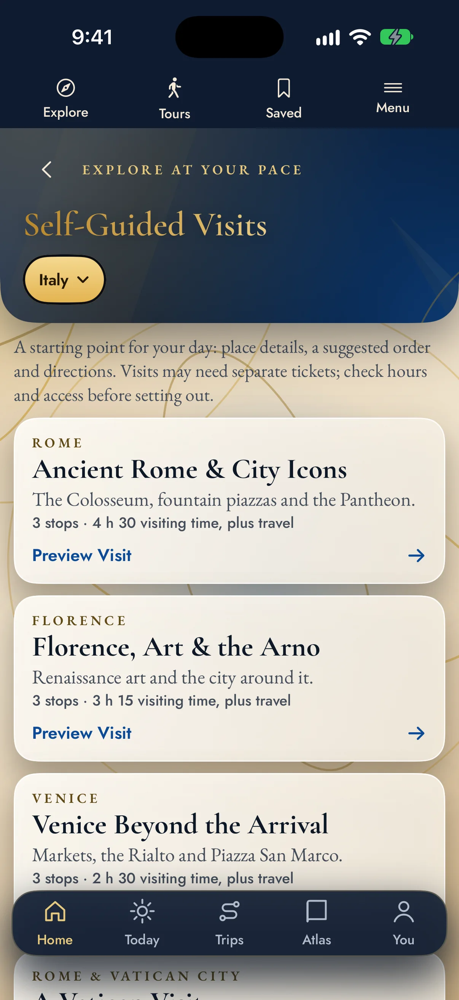
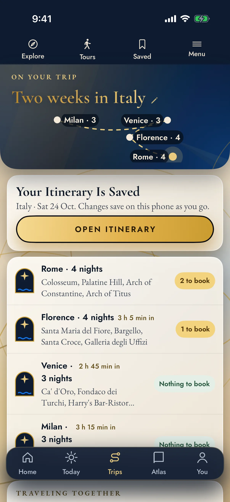

Discover
Find the Places You Came For
Search 24,587 places in 14 countries, from major landmarks to museums, markets and smaller discoveries. Save the ones that make you want to go.
The Uffizi before the crowds. A Belém pastry still warm from the oven. A Tokyo temple you’d never have found alone. Turn a country full of possibilities into days you’ll remember.
Tell it what you love, and it builds the days: what to see, in a sensible order, with directions and booking reminders on the way.


Free to download. Watch the 31-second tour to see it in action.
A great trip has room for both the must-sees and the unexpected. Start with the places, then shape the journey around you.
Search 24,587 places in 14 countries, from major landmarks to museums, markets and smaller discoveries. Save the ones that make you want to go.
Build a trip around your interests and pace. Turn ideas into an itinerary, keep booking reminders close and adjust as your plans take shape.
Follow one of 18 self-guided city visits. Read the place notes, choose your stops and mark your progress as you go. There’s time to linger.

A suggested route gives the day a shape. The time you spend at each stop is yours.
Open a city visit, read about the places along the way and pick where to begin. Mark the sights you’ve seen and get directions when you’re ready to move on.
Written stop notes, your own pace and directions between places. Good to know: book tickets directly with each attraction.

Bring your interests, available time and travel pace into one plan.
Save ideas as you find them. Shape the trip around what matters to you, keep the itinerary and booking reminders together, and pick up at the same planning step whenever you’re ready.
Good to know: live maps, current opening information and outside services need a connection.
Try the essentials free, plan a single trip or make room for many more. You buy in the app, through Apple or Google Play, and see your local price before you pay.
$0 to download
Get a feel for the places and the planner.
$14.99 for 30 days
The full planner for 30 days, one trip at a time.
$5.99 a month or $39.99 a year
For the next journey, and the one after.
$14.99 a month or $119 a year
For travelers eyeing a second home or a move.
Keep the country Atlases beside your travel plans. Explore 116 shortlisted towns, compare everyday life and start asking the questions behind a second home or a move.
The current app has 18 self-guided visits across all 14 countries. Each one links six or seven stops, with written notes, a suggested order, directions and saved progress.
These are hand-picked city visits inside a much larger place catalog. You can still explore other cities and plan trips there wherever the catalog has suitable places. See all 18 self-guided visits →
Open Tours and choose a visit. In Rome, for example, the list takes you from the Colosseum and Forum toward Trevi, the Pantheon and Piazza Navona. Each stop has a short introduction, fuller place details, an estimated visiting time and a Directions button.
Follow the suggested order or start wherever you like.
The visits are designed for exploring independently, with written place notes. There is no human guide, narrated audio or GPS-triggered commentary, so you explore freely. Admission tickets and bookable experiences are bought separately.
Some place pages include a website or reference link, so you can look into the venue and its booking options.
Yes. Open Directions on a place or itinerary stop and choose where to begin:
Choose walking, transit or driving, then open the journey in Apple Maps or Google Maps. They supply the route, current travel time and navigation, and a saved address gives you an easy way back. The app does not book hotels: arrange your stay with your preferred service, then add the address. Check the entrance and map pin before setting off.
Free gives you room to find out what appeals to you:
Each paid plan adds more. Trip Pass opens the full multi-day planner and Today, Traveler adds unlimited saved trips and planning together, and Atlas Member adds the full Atlas collection. Explore the places first, then pick the plan that fits.
Choose by the kind of planning you want to do:
You see current prices, renewal terms and any trial for your Apple Account in the app before you buy. Pick Traveler for the journeys, and Atlas Member when you also want the full country research.
Plenty works offline, so you can read on a train or keep roaming switched off:
Websites, current tickets and opening information, new map searches and live directions need a connection or that provider’s own offline features.
In Settings, open Backup, Import & Privacy. Export everything creates a file containing your trips, edited days, ideas, shortlist, stay log and scouting scores. Save it somewhere you can reach from another phone, then use Restore from an export to bring it back.
You can also enable iCloud backup and use Restore from iCloud to retrieve the last available copy on your Apple Account. This is backup and restore, not live syncing between devices.
Already have a list? Import accepts supported Google Maps Takeout files or a CSV with name, latitude and longitude. They arrive as saved places; importing a list does not reserve or schedule what is on it.
Recorded in the live app on an iPhone with a demonstration trip, played at 1.5× speed.